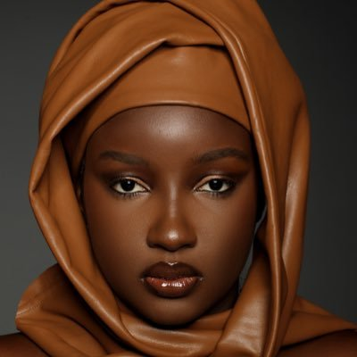
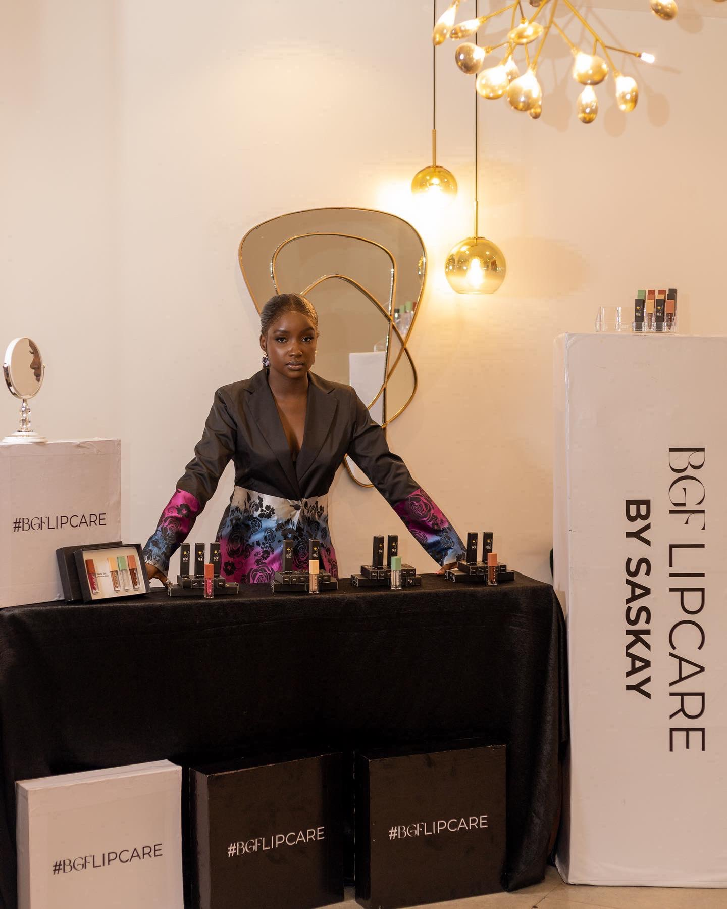
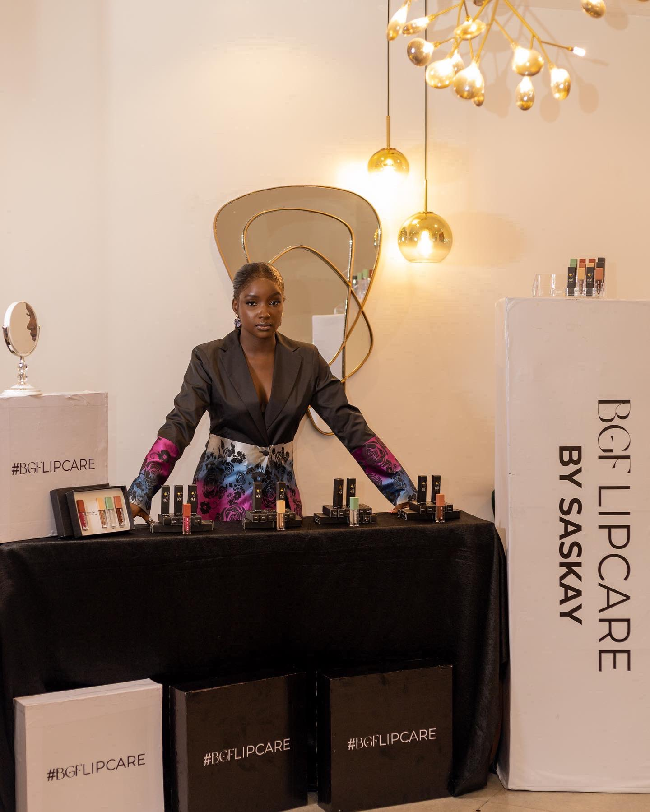

Show 7 Tweets

Saskay @OfficialSaskay . 3d

Saskay @OfficialSaskay . 3d
A jack of all trade is a master of none
but still is better than a master of one!

Marc Cucurella @cucurella3 . 15h
Good vibes and three big points to start
the season!

Trends for you
Entertainment . Trending
#Phyna
13.4k Tweets
#Phyna
13.4k Tweets
Entertainment . Trending
#Groovymono
10.8k Tweets
#Groovymono
10.8k Tweets
Celebrities . Trending
#Shella
3,916 Tweets
#Shella
3,916 Tweets
Trending in Nigeria
Piggyvest
2.243 Tweets
Piggyvest
2.243 Tweets
Trending in Nigeria
Ebuka
21.6k Tweets
Ebuka
21.6k Tweets
Music . Trending
Air Trance
3,880
Air Trance
3,880
Entertainment . Trending
#BBNaijaS7
33.1k Tweets
#BBNaijaS7
33.1k Tweets
Politics . Trending
William Ruto
85.3k Tweets
William Ruto
85.3k Tweets